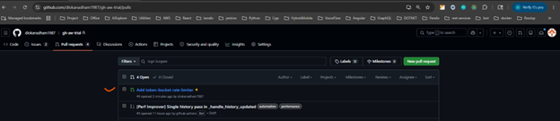
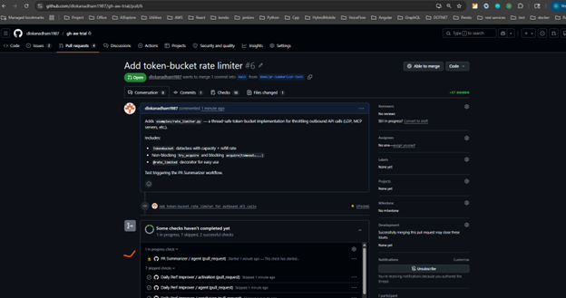
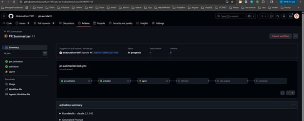
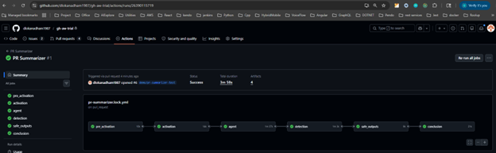
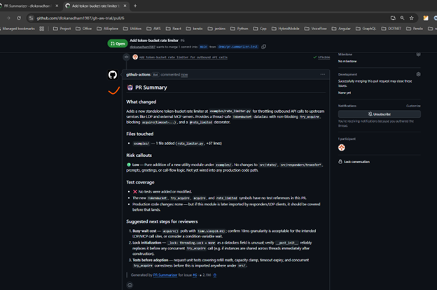

GitHub Agentic Workflows (gh-aw) is GitHub's official answer.
This session: what it is, how it works, and what it looks like in action.
A regular GitHub workflow you'd write in YAML — except instead of writing commands, you write an English prompt, and an AI agent figures out what to do at runtime.
PR opened, schedule, issue created — same events as any workflow.
An AI agent (Claude / Copilot / Codex) executing your written intent.
Allow-listed tools and safe-outputs — agent can't go off-script.
Examples: "Review every PR for security issues" · "Open a daily issue summarising yesterday's test failures" · "Auto-label PRs based on what files changed"
.md.yml).md)
Both live in .github/workflows/. Both run on the same GitHub Actions runners.
The difference is who decides the steps — you, or the agent.
workflow.mdgh aw compileworkflow.lock.ymlYou author intent. gh-aw produces YAML. GitHub Actions runs it like any other pipeline — calling Claude mid-job.
Lives in your IDE.
.md.claude/ subagents & skillsLives in a sandboxed GitHub runner.
ANTHROPIC_API_KEY repo secret.md exposesTwo completely different processes. The Claude that helped you write the prompt is not the same Claude that runs the prompt.
pr-summarizer.md — frontmatter + prompt body. ~25 lines.
pr-summarizer.lock.yml — generated by gh aw compile. ~1000+ lines. Don't edit.
# 1. One-time per repo
gh aw init
# 2. Add or write a workflow
gh aw add pr-summarizer
# 3. Whenever the .md changes
gh aw compile pr-summarizer
Think package.json + package-lock.json. You author one, the tool maintains the other.
.md file
.md file — overall--- ← frontmatter starts
name: PR Summarizer
on:
pull_request:
types: [opened, synchronize]
engine: claude
permissions:
contents: read
pull-requests: write
tools:
github:
allowed: [get_pull_request_diff, list_commits]
safe-outputs:
add-comment: { max: 1 }
--- ← frontmatter ends
# PR Summarizer ← body starts (the prompt)
Read the PR diff and post ONE comment with:
- **What changed** — 2-3 sentences
- **Risk callouts** — 🔴 / 🟡 / 🟢
- **Test coverage** — gaps?
- **Suggested next steps**
Two parts: frontmatter (configuration in YAML) and body (the prompt in English).
.md file
| Field | What it controls | Required? |
|---|---|---|
on: |
When does it run? (PR, schedule, issue, manual) | ✅ Yes |
engine: |
Which AI engine — claude / copilot / codex |
✅ Yes |
permissions: |
What GitHub scopes the run gets | 🟡 Strongly recommended |
tools: |
What the agent can call — github MCP, bash, web-fetch | 🟡 Strongly recommended |
safe-outputs: |
What the agent is allowed to produce — comments, PRs, labels | 🟡 Strongly recommended |
imports: |
Shared .md content (e.g. from .claude/) |
⚪ Optional |
Frontmatter is the contract: when, who, with what tools, producing what.
.md file
# PR Summarizer
You are reviewing a pull request. Post ONE comment with these sections:
1. **What changed** — short plain-English summary
2. **Files touched** — high-level map of areas affected
3. **Risk callouts** — 🔴 high / 🟡 medium / 🟢 low
4. **Test coverage** — flag any missing tests
5. **Suggested next steps** — concrete reviewer actions
Use markdown headings and bullet points. Keep it under 400 words.
*.lock.yml and starts a runnerAgent has a GitHub token. It can do anything the token allows: push to main, force-delete branches, leak secrets.
Agent runs in a sandboxed job with no write token. It writes intent to a file ("post this comment"). A separate job validates and executes only what you allow-listed.
Translation: even a prompt-injection attack can't make the agent push code.
gh-aw extensiongh aw init in repoANTHROPIC_API_KEY as repo secret.md (frontmatter + body)gh aw compile <name>.md and .lock.ymlThe loop is the same for every workflow you'll ever build.
# Step 1 — Install the extension (one-time, per machine)
gh extension install githubnext/gh-aw
# Step 2 — Initialize in your repo (one-time, per repo)
cd path/to/your/repo
gh aw init
# Step 3 — Set the API key as a repo secret
gh secret set ANTHROPIC_API_KEY
# (paste sk-ant-… when prompted)
# Step 4 — Author the workflow source file
# Either pull a template:
gh aw add pr-summarizer
# Or hand-write .github/workflows/<name>.md (see anatomy slides)
# Step 5 — Compile .md → .lock.yml (deterministic, no AI)
gh aw compile pr-summarizer
# Step 6 — Commit BOTH files together
git add .github/workflows/pr-summarizer.md \
.github/workflows/pr-summarizer.lock.yml \
.github/aw/actions-lock.json
git commit -m "Add PR Summarizer agentic workflow"
# Step 7 — Push to the default branch
git push # workflow auto-registers when on default branch
# Step 8 — Trigger it (open any PR)
gh pr create --title "Test workflow" --body "Triggering it"
# Step 9 — Watch logs & iterate
gh run watch
To change the prompt later: edit the .md body → commit → push. No recompile needed for body-only edits.
A workflow that fires when a PR opens. The agent reads the diff, classifies risk, checks test coverage, and posts one structured review comment — usually within 60 seconds.
Any PR opened against main
Claude, with read-only GitHub access
One markdown comment on the PR
Source repo: github.com/dlokanadham1987/gh-aw-demo





.claude/ subagents
Many teams have already invested in Claude Code subagents
and skills inside .claude/ — security reviewers, style checkers, triage agents
that devs use locally in their IDE.
Question: can the same prompt that helps your dev locally also run automatically on every PR in CI?
Answer: yes — via imports: in the workflow frontmatter.
.claude/ subagents
imports:
One source of truth for the prompt. Update .claude/agents/security-reviewer.md once;
both your IDE and CI pick it up.
.claude/ subagents
# .github/workflows/security-review.md
---
name: Security Reviewer
on:
pull_request:
types: [opened, synchronize]
engine: claude
permissions:
contents: read
pull-requests: write
imports:
- .claude/agents/security-reviewer.md ← reuse the IDE subagent
tools:
github:
allowed: [get_pull_request_diff, get_pull_request_files]
safe-outputs:
add-comment: { max: 1 }
add-labels: { max: 3 }
---
# Security Reviewer
Apply the security-reviewer rules imported above to this PR's diff.
Post ONE comment summarizing findings. Apply labels:
- `security:high` for any 🔴 finding
- `security:review` if any 🟡 findings exist
~20 lines. Reuses an existing subagent. Adds CI automation on top.
.claude/ subagents
Developer asks Claude Code: "Run the security reviewer on this branch."
Loads .claude/agents/security-reviewer.md automatically.
Agentic workflow imports the same file, runs automatically when a PR opens.
Same prompt, same standards, no duplication.
Update the prompt once → both surfaces benefit. That's the org-wide payoff of agentic workflows on top of Claude Code investments.
.claude/ subagents to bridge to CI.claude/)github.com/githubnext/gh-aw — official repogithub.com/githubnext/agenticsgh-aw-demo — experimentgh aw add pr-summarizer in a personal repogithub.com/dlokanadham1987/gh-aw-demo| → Space n | Next slide |
| ← p | Previous slide |
| Home / End | First / last slide |
| F | Toggle fullscreen |
| . | Toggle speaker notes |
| Esc | Overview / close overlays |
| ? | This help |
Click anywhere — left half = previous, right half = next.